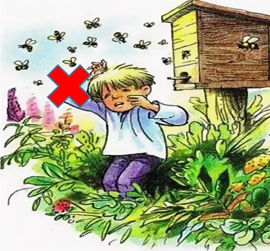
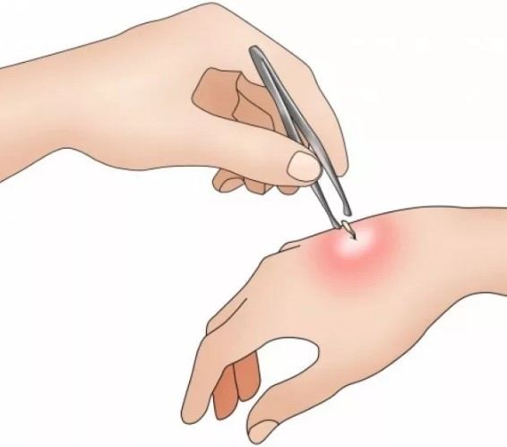
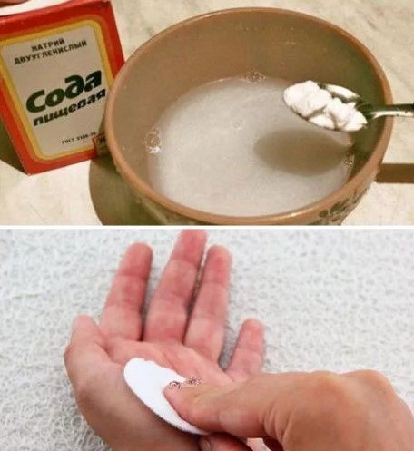
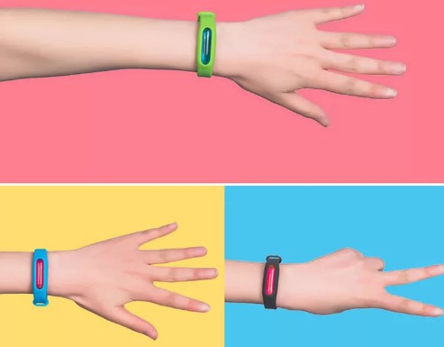
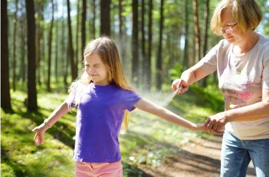
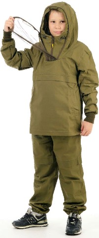
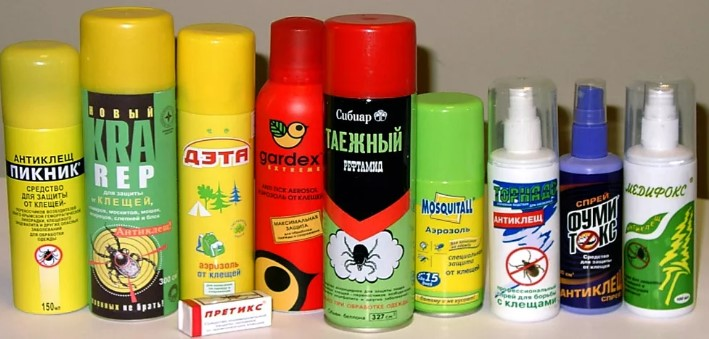
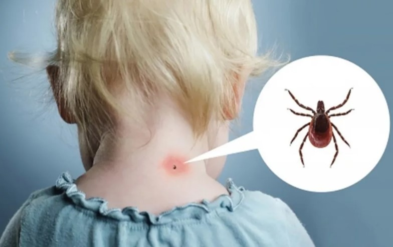
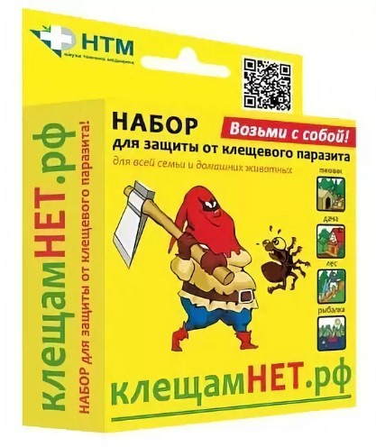

|
Чтобы не укусила пчела (оса, шмель):
избегайте участков с цветами, где цветы – там летают пчёлы;
при употреблении сладких напитков на воздухе смотрите, чтобы оса не оказалась внутри стакана;
не ходите босиком, чтобы не наступить на пчелу; заправляйте волосы, чтобы пролетающая мимо пчела не запуталась в них;
если одежда лежала на земле, встряхните ее; если внутрь заползла пчела, она улетит;
выходя в поле, надевайте одежду с длинными рукавами;
летом в автомобиле лучше не открывать окон, пчела может забраться внутрь;
при езде на мотоцикле лучше закрыть тело.
|


|
Что делать если укусила пчела (оса, шмель)?
срочно расскажите об этом взрослым, потому что яд пчелы опасен!;
сохраняйте спокойствие;
избавьтесь от жала: продезинфицируйте ранку и инструмент извлечения жала (перекисью водорода, йода – для ранки; обычный медицинский спирт – для пинцета);
яд не выдавливайте, сдавливая кожу вы ещё больше травмируете её;
больше пейте (сладкая вода, горячий сладкий чай), чтобы легче перенести последствия укуса;
на место отёка положите грелку с холодной водой; отёк опасен, надо предотвратить его распространение;
намочите ткань раствором пищевой соды (1 ч. ложка на 1 стакан воды) и оставьте на больном месте на 15–20 минут, это снимет боль и тоже снимет отёк.
|


|
Чтобы не укусил комар:
в помещениях использовать фумигатор, он распространяет запах, который не любят комары;
использовать: антикомариный браслет, наклейки от комаров – они выделяют запах, который не любят комары; хорошо защищает антимоскитная одежда.
На природе использовать антикомариные свечи и «спирали», сгорая, они выделяют запах, который не выносят комары.
Наносить на кожу репеллентные средства, комары не выносят их запах.
|
|
|
Если укусил комар:
Омываем место укуса холодным мыльным раствором, чтобы грязь не попала в ранку.
Делаем ледяной компресс на четверть часа, он снимет отёк от укуса.
Прикладываем к ране пищевую соду в виде раствора (1 чайная ложка соды на 1 стакан холодной воды), это также снимет отёк и зуд.
|


|
Чтобы не укусил клещ:
Одеваемся: ткань должна быть гладкой; тело должно быть прикрыто; на рукавах плотные манжеты; кофту заправляем в брюки, а брюки в носки; головной убор; или одеваем противоэнцефалитный костюм; клещ не сможет прицепиться и залезть под одежду.
Не залезать в чащи кустарника; около земли, в густой растительности больше всего клещей.
Через каждые 1,5-2 часа пребывания в лесу проводить осмотры верхней одежды и открытых частей тела, чтобы удалить клеща, пока он не впился в кожу.
Не забываем вернувшись домой: встряхивать одежду; осматривать тело; расчесать волосы мелкой расческой, чтобы проверить не впился ли клещ.
Перед выходом на природу наносим на кожу репеллентные средства, клещи не выносят их запах и не станут кусать.
|

|
Если укусил клещ:
Срочно сообщите об этом взрослым! Клещ очень опасен!
Как можно скорее обратитесь в травмпункт (особенно если это ребёнок!). Медицинский работник сделает всё, чтобы не допустить тяжёлого заболевания.
Если показаться врачу нет возможности, удалите клеща самостоятельно. Извлекать паразита нужно пинцетом или специальными приспособлениями, делая выкручивающие движения и стараясь не повредить брюшко и хоботок.
|

|
Можно использовать специальный набор для удаления клеща, если такой возможности нет:
1. Сделать из прочной нити петлю и затянуть ее у основания хоботка клеща.
2. Придерживая кожу пальцами, покачивая клеща, вытягивать его, растягивая концы нити в стороны.
Можно захватить клеща пинцетом или обернутыми чистой марлей пальцами ближе к его ротовому аппарату и, держа строго перпендикулярно поверхности укуса, повернуть тело клеща вокруг оси, извлечь его из кожных покровов.
3. Место укуса смазать 70% спиртом, 5% йодом, зеленкой.
4. Если головка осталась в коже, то нужно обратиться в поликлинику. Если нет возможности, обработать место 5% йодом и извлечь как занозу.
5. Клеща поместить в пузырек.
6. Вымыть руки с мылом.
7. Отвезти клеща в травмпункт на исследование.
|